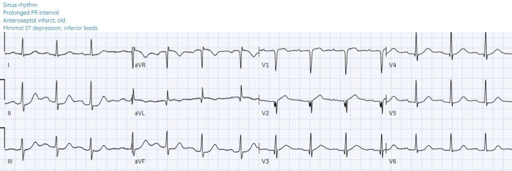
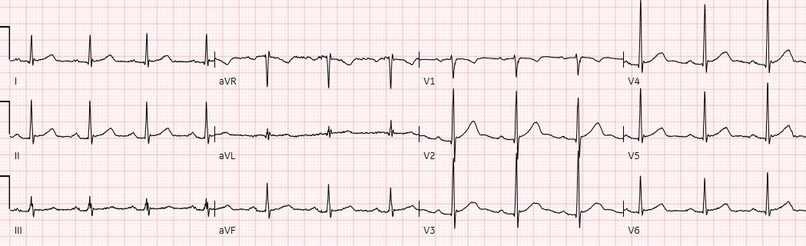
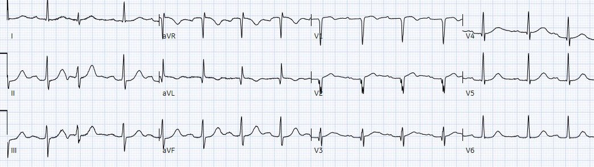
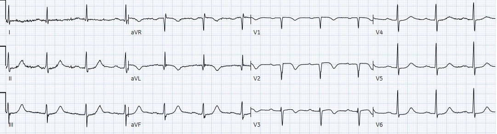
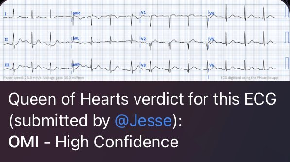
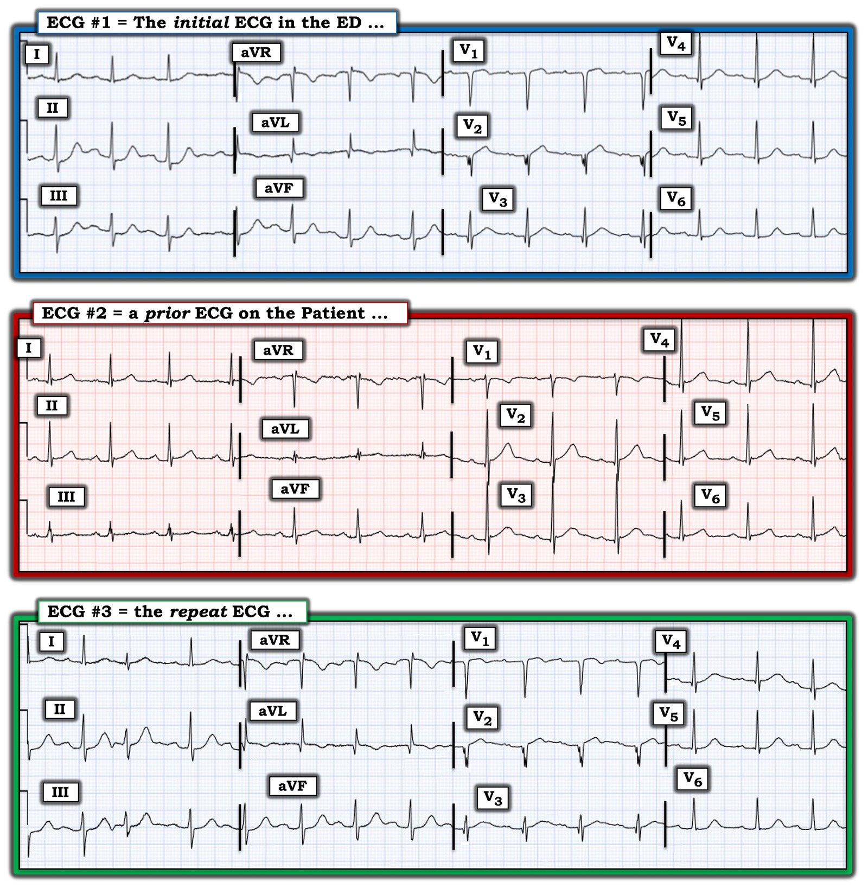

04/04/2023 — Bệnh nhân 70 tuổi đau ngực cấp, STEMI âm tính: chỉ là nhồi máu cũ?
Bản dịch tiếng Việt của bài "70-year-old with acute chest pain, STEMI negative: just an old infarct?" – Dr. Smith’s ECG Blog. Giữ nguyên toàn bộ 7 hình ảnh của bản gốc.
Ca bệnh do BS. Dennis Cho (@DennisCho) gửi,
Jesse McLaren viết bài
Bệnh nhân 70 tuổi, không có tiền sử bệnh tim,
đến viện vì đau ngực 2 giờ lan lên cổ, kèm theo
khó thở. Bạn nghĩ gì?


Nhịp xoang bình thường, blốc AV độ
một, trục và điện thế bình thường. Tăng tiến sóng R bất thường: có sóng Q
ở aVL/V2-3 và mất sóng R ở V2. Kèm theo đó là ST chênh lên tối thiểu
ở aVL/V1-V2 và ST chênh xuống soi gương ở thành dưới rõ hơn, cùng ST chênh xuống tối thiểu ở V5-6.
Đây là hình ảnh chẩn đoán OMI, do tắc LAD đoạn gần hoặc nhánh chéo thứ nhất.
Sóng Q, nhồi máucũ?
Dưới đây là điện tâm đồ cũ, cho thấy tất cả
những thay đổi này đều mới – kể cả các sóng Q.


Dù kết luận cuối cùng trên điện tâm đồ mới
là “nhồi máu trước vách, cũ”, bệnh nhân đã xuất hiện sóng Q cấp sau
chỉ 2 giờ có triệu chứng thiếu máu cục bộ. Sóng Q cấp là dấu hiệu của thiếu máu cục bộ
nặng và là yếu tố dự báo tái tưới máu muộn.
Bệnh nhân này rất dễ
bị bỏ sót, vừa vì điện tâm đồ STEMI âm tính, vừa vì các sóng Q
bị quy cho một “nhồi máu cũ”. May mắn là BS. Cho không đi tìm
tiêu chuẩn STEMI trên điện tâm đồ mà tìm một tắc mạch vành cấp. Như anh
đã ghi trong hồ sơ: “Bệnh nhân này đang đau ngực phù hợp với
hội chứng vành cấp. Tôi lo ngại về các dấu hiệu điện tâm đồ này vì chúng có thể
là biểu hiện của một tình trạng tắc mạch kín đáo.” Vì vậy anh đã yêu cầu hội chẩn tim mạch khẩn (STAT) để
cân nhắc kích hoạt phòng thông tim (cath lab).
OMI hay STEMI?
Khoa tim mạch
ghi lại điện tâm đồ, vẫn là OMI STEMI âm tính (STEMI(-)OMI) nhưng mất sóng R ở V3:


Kết quả
troponin đầu tiên chỉ 100 ng/L (bình thường <26 ở nam và <16 ở
nữ) – xác nhận rằng các sóng Q là cấp, không phải bán cấp hay cũ. Siêu âm
tim tại giường cho thấy rối loạn vận động thành khu trú vùng trước, tương ứng với các thay đổi
trên điện tâm đồ. Như khoa tim mạch đã ghi: “có thể là STEMI. Với các thay đổi điện tâm đồ,
dấu hiệu siêu âm tim và bệnh sử điển hình, đã phát báo động STEMI (code STEMI).”
Phòng
thông tim được kích hoạt và phát hiện tắc 100% LAD đoạn gần, troponin I đỉnh 130,000 ng/L và EF 40% – cải thiện lên 55% lúc ra viện. Điện tâm đồ
lúc ra viện cho thấy sóng T đảo ngược do tái tưới máu, kèm mất thêm sóng R ở V3:


Chẩn đoán
ra viện là “STEMI” dù chưa từng có điện tâm đồ nào đạt tiêu chuẩn STEMI.
Chuyển đổi mô hình
Như Smith/Meyers
đã viết, dù cần phải
có sự chuyển đổi mô hình từ STEMI sang OMI, vẫn có những bước cụ thể mà chúng ta có thể
thực hiện ngay: “Chúng ta nên làm gì trong lúc vẫn còn mắc kẹt
trong mô hình STEMI ở thực hành hằng ngày?
Thứ nhất, hãy bắt đầu dùng thuật ngữ giúp
sự hiểu biết của chúng ta tiến lên. Hãy bắt đầu dùng các thuật ngữ tắc mạch vành
cấp và nhồi máu cơ tim do tắc.
Thứ hai, hãy cân nhắc học thêm về điện tâm đồ trong OMI,
đặc biệt là các đặc điểm ngoài ST chênh lên giúp chẩn đoán OMI.
Hãy học toàn bộ diễn tiến của các dấu hiệu điện tâm đồ khi tắc và khi tái tưới máu, vốn
đã bị che khuất khỏi chương trình đào tạo của bạn do mô hình STEMI. Hãy theo dõi
kết quả thông tim của bệnh nhân để biết ca nào là dương tính giả hay ca tắc mạch nào
bị bỏ sót.
Quan trọng nhất, trong khi chờ mô hình thay đổi,
hãy luôn tập trung vào mục tiêu thực sự cho bệnh nhân ACS của chúng ta: nhận diện và
tái tưới máu cho bệnh nhân bị nhồi máu cơ tim do tắc cấp.”
Đó chính xác là
điều đã xảy ra trong ca này. Ca bệnh này là một phần của sáng kiến cải tiến chất lượng
đang được triển khai nhằm giảng dạy OMI tại chỗ cho các bác sĩ
cấp cứu. Nhờ vậy, BS. Cho đã không bị phân tâm bởi việc thiếu tiêu chuẩn STEMI
hay bởi ‘nhồi máu cũ’, và đã nêu cụ thể mối lo ngại về một tình trạng tắc mạch
kín đáo. Các bác sĩ tim mạch cũng nhìn xa hơn tiêu chuẩn STEMI, xem xét
tổng hợp các dấu hiệu lâm sàng/điện tâm đồ/siêu âm tim để đưa ra quyết định tái tưới máu. Nếu
họ làm theo hướng dẫn STEMI, bệnh nhân này với hai điện tâm đồ STEMI âm
tính và troponin ban đầu chỉ 100 ng/L sẽ được nhập viện với chẩn đoán
“non-STEMI” và có kết cục xấu hơn. Thay vào đó, bệnh nhân này, với tắc mạch vành
cấp 100% và nhồi máu diện rộng, đã được can thiệp sớm dù chưa từng có điện tâm đồ
nào đạt tiêu chuẩn STEMI. Vấn đề duy nhất là chẩn đoán ra viện
“STEMI” đã che lấp sự thật này và duy trì mô hình cũ.
Ca bệnh này cũng cho thấy các dấu hiệu OMI trên điện tâm đồ có thể giảng dạy được, cho cả con người lẫn AI. Tôi đã gửi
điện tâm đồ cũ và mới của bệnh nhân này cho bác sĩ nội trú của tôi là Mazen, không kèm bất kỳ
thông tin nào, và cậu ấy trả lời: “Tôi nghĩ có dấu hiệu OMI LAD đoạn gần với
ST chênh lên thành trước bên và ST chênh xuống thành dưới.” Tôi cũng gửi điện tâm đồ đầu tiên cho
AI PMcardio, và AI dự đoán OMI với độ tin cậy cao:


PM Cardio AI là một ứng dụng:
1) nhận bất kỳ ảnh điện tâm đồ nào và chuyển thành tín hiệu số phù hợp để xử lý bằng mạng nơ-ron sâu của AI, sau đó
2) phân tích điện tâm đồ để phát hiện OMI
Ứng dụng được huấn luyện bởi các BS. Smith và Meyers
Bạn có thể đăng ký nhận ứng dụng tại địa chỉ này: Bạn có thể tải ứng dụng AI này tại đây: https://share-eu1.hsforms.com/18cAH0ZK0RoiVG3RjC5dYdwfyfsg
Điều cần nhớ
1.
Sóng
Q có thể là cấp.
2.
Tiêu chuẩn
STEMI có độ nhạy kém đối với nhồi máu cơ tim do tắc, nhưng nhìn xa hơn ST
chênh lên – bao gồm sóng Q cấp và ST chênh xuống soi gương – có thể giúp
chẩn đoán.
3.
Sử dụng
thuật ngữ OMI có thể giúp cải thiện việc đọc điện tâm đồ và bảo vệ quyền lợi cho bệnh nhân
bị OMI STEMI âm tính (STEMI(-)OMI).
4.
Các dấu hiệu
OMI trên điện tâm đồ có thể học và giảng dạy được – cho cá nhân, nhóm và AI.

==================================
BÌNH LUẬN CỦA TÔI, bởi KEN GRAUER, MD (4/4/2023):
==================================
Ca bệnh hôm nay củng cố nhu cầu áp dụng rộng rãi hơn “mô hình OMI” mới. “Mô hình STEMI” cũ rõ ràng đã lỗi thời và phản tác dụng đối với việc chăm sóc tối ưu. Ghi nhận công lao của BS. Dennis Cho vì đã nhận ra và áp dụng kịp thời các nguyên tắc này!
- “Tin tốt” từ ca bệnh hôm nay — là khoa tim mạch đã tiến hành thông tim sau khi OMI được xác nhận bằng troponin tăng dần và siêu âm tim tại giường cho thấy rối loạn vận động thành khu trú vùng trước.
- Dù vậy — có rất nhiều điều để học từ ca bệnh hôm nay về lý do tại sao tình trạng OMI cấp đang diễn ra của bệnh nhân này lẽ ra đã phải được thông tim sớm hơn.
Để rõ ràng và dễ so sánh — tôi đã đặt 3 bản ghi đầu tiên trong ca hôm nay cạnh nhau ở Hình 1. Tôi xin bổ sung các điểm sau vào phần bàn luận xuất sắc của BS. McLaren.
Điện tâm đồ ban đầu:
Xét bệnh sử lúc đến viện trong ca hôm nay (tức là một người đàn ông 70 tuổi bị đau ngực mới bắt đầu chỉ 2 giờ trước) — chẩn đoán OMI cấp từ điện tâm đồ ban đầu không hề kín đáo.
- Mặc dù tiêu chuẩn milimét cho STEMI không được thỏa mãn trên điện tâm đồ #1 — có những dấu hiệu điện tâm đồ bất thường ở ít nhất 10/12 chuyển đạo!
- Có ST chênh lên nhẹ-nhưng-thật ở chuyển đạo V2. Quan trọng hơn — đoạn khởi đầu ST thẳng đuỗn hoàn toàn, với thể tích sóng T không tương xứng với biên độ QRS ở chuyển đạo này, rõ ràng có hình dạng tối cấp ở bệnh nhân đau ngực dữ dội mới xuất hiện này.
- Dù tôi có thể chưa chắc chắn rằng ST-T ở chuyển đạo V2 là cấp nếu chỉ dựa vào riêng chuyển đạo này — ST chênh lên dạng vòm kín đáo-nhưng-thật ở chuyển đạo aVL, đi kèm sóng T đảo ngược ở chuyển đạo này — cho chúng ta biết rằng hình dạng ST-T bất thường ở chuyển đạo V2 phải được xem là cấp cho đến khi chứng minh được điều ngược lại.
- Củng cố thêm cho các bất thường ST-T cấp ở chuyển đạo aVL và V2 — là ST chênh xuống soi gương dạng bậc thềm ở mỗi chuyển đạo thành dưới (đặc biệt rõ ở chuyển đạo II và aVF).
- Tiếp tục trong bối cảnh này — ST chênh lên dạng vòm ở chuyển đạo V1 là bất thường rõ rệt (Hiếm khi bình thường lại có mức ST chênh lên dạng vòm như thế này ở chuyển đạo V1).
- Điều này dẫn chúng ta tới chuyển đạo V3 kế bên — nơi mà thay vì đoạn ST dốc lên thoai thoải như lẽ ra phải thấy ở chuyển đạo này — lại có đoạn khởi đầu ST thẳng đuỗn rõ rệt ở V3.
- ST dẹt kèm chênh xuống nhẹ thấy ở các chuyển đạo V5 và V6 thành bên, và ở mức độ ít hơn ở chuyển đạo I.
- Cuối cùng — một thành phần thiếu máu cục bộ dưới nội tâm mạc được gợi ý bởi ST chênh lên ở chuyển đạo aVR đi kèm với 6 chuyển đạo nêu trên có ST chênh xuống.
- ĐIỂM THEN CHỐT (PEARL): Ở bệnh nhân đau ngực mới — Một khi bạn đã xác định được vài chuyển đạo có bất thường ST-T cấp chắc chắn (trong ca này — chuyển đạo V2, aVL và II,III,aVF) — thì bạn càng xác định được nhiều chuyển đạo khác có dấu hiệu ST-T ít rõ hơn nhưng vẫn bất thường — khả năng điện tâm đồ thực sự phản ánh một biến cố cấp đang diễn ra càng cao. Ít nhất 10/12 chuyển đạo trên điện tâm đồ #1 có thay đổi ST-T có thể là cấp.
Còn tất cả các sóng Q trên điện tâm đồ #1 thì sao?
Như BS. McLaren đã nêu — sự xuất hiện sóng Q cấp trong vòng vài giờ kể từ khi khởi phát triệu chứng là dấu hiệu của thiếu máu cục bộ nặng và là yếu tố dự báo tái tưới máu muộn.
- Trên điện tâm đồ ban đầu — Không chỉ là một sóng “Q” ở chuyển đạo V2 — mà là một phức bộ QrS phân mảnh, trong đó sóng r gần như không trở về được tới đường nền. Xin nhấn mạnh: Hình dạng QrS ba pha này ở chuyển đạo V2 (nhất là khi sóng Q ban đầu rộng đến vậy) — là dấu hiệu chắc chắn của “sẹo” do nhồi máu tại một thời điểm nào đó.
- Điều đáng chú ý là khi tìm được một điện tâm đồ cũ của bệnh nhân hôm nay (tức là điện tâm đồ #2 trong Hình 1) — nó cho thấy các sóng q ban đầu nhỏ và hẹp ở các chuyển đạo từ V2 đến V6. Sóng q vách bình thường nói chung không thấy trước chuyển đạo V4 — tuy nhiên, với các sóng R cao bất ngờ bắt đầu từ chuyển đạo V2 trên điện tâm đồ #2 — nhiều khả năng các sóng q nhỏ và hẹp ở chuyển đạo V2 đến V6 của bản ghi cũ này không có ý nghĩa lâm sàng. Điều này xác nhận nhận định của BS. McLaren rằng sóng Q ở chuyển đạo V2 của điện tâm đồ #1 là mới!
- Lưu ý trên điện tâm đồ #1 — mặc dù sóng Q ở chuyển đạo V3 hẹp, và tiếp theo là một sóng Q hẹp ở chuyển đạo V4 — không có sóng Q ở cả chuyển đạo V5 lẫn V6. Vì “sóng q vách bình thường” không xuất hiện ở chuyển đạo V3,V4 mà không đồng thời thấy ở các chuyển đạo bên V5,V6 — điều này cho chúng ta biết các sóng Q ở chuyển đạo V3 và V4 của điện tâm đồ #1 cũng là mới.
- Cuối cùng — sóng Q ở chuyển đạo aVL của điện tâm đồ #1 rộng không tương xứng (xét theo biên độ QRS ở chuyển đạo này) — đồng thời lớn hơn nhiều so với sóng Q rất nhỏ đã thấy ở chuyển đạo aVL của bản ghi cũ.
Còn điều gì khác cần lưu ý về bản ghi cũ?
- Không chỉ có sóng Q mới ở chuyển đạo V2,V3,V4 của điện tâm đồ #1 — mà còn có sự mất đáng kể các lực hướng ra trước (tức là Các sóng R cao bất ngờ ở chuyển đạo V2,V3 của bản ghi cũ đã nhỏ đi rõ rệt trên điện tâm đồ #1).
- Việc nhận ra đoạn ST thẳng đuỗn bất thường ở chuyển đạo V2,V3 của điện tâm đồ #1 — càng nổi bật nhờ sự thay đổi so với đoạn ST dốc lên thoai thoải bình thường đã thấy trên bản ghi cũ.
- ST chênh xuống dạng bậc thềm thấy ở các chuyển đạo thành dưới của điện tâm đồ #1 càng đáng chú ý hơn như một thay đổi cấp — khi xét rằng thực tế đã có một ít ST chênh lên ở các chuyển đạo thành dưới trên bản ghi cũ.


Còn điện tâm đồ ghi lại thì sao?
Một trong những trở ngại lớn nhất đối với việc chấp nhận rộng rãi hơn “mô hình OMI” mới — là việc quá nhiều bác sĩ lâm sàng vẫn liên tục không nắm được sinh lý bệnh cơ bản của các diễn biến đang xảy ra trong tắc mạch vành cấp.
- Khoa tim mạch đã ghi lại điện tâm đồ ban đầu trong ca hôm nay — nhưng dường như đã không xem xét (hoặc ít nhất là không ghi chép lại) — liệu đau ngực (Chest Pain) có còn hay không vào thời điểm ghi điện tâm đồ #3 (và nếu vẫn còn đau ngực — thì đau nhiều hơn, ít hơn hay như lúc ghi điện tâm đồ #1?).
- Việc đối chiếu sự hiện diện và mức độ nặng tương đối của đau ngực tại thời điểm ghi mỗi điện tâm đồ liên tiếp là then chốt — bởi khi so sánh điện tâm đồ #1 với điện tâm đồ ghi lại ( = điện tâm đồ #3 trong Hình 1) — có những thay đổi điện tâm đồ “động“ (tức là ST chênh xuống ít hơn ở các chuyển đạo thành dưới và ở chuyển đạo V5,V6 trên điện tâm đồ #3 — và — đoạn ST ở chuyển đạo V2,V3 trên điện tâm đồ #3 trông ít cấp tính hơn — và — sóng T bắt đầu đảo ngược ở chuyển đạo V1,V2 trên điện tâm đồ #3).
- Điểm MẤU CHỐT: NẾU các thay đổi ST-T nêu trên ở điện tâm đồ #3 tương ứng với việc đau ngực giảm hoặc hết vào thời điểm ghi điện tâm đồ #3 — thì điều này gợi ý mạnh mẽ tái tưới máu tự phát (tức là mạch “thủ phạm” đã mở lại). Điều này hoàn toàn phù hợp với sinh lý bệnh của tình trạng tắc mạch vành đang diễn ra — và càng xác nhận chẩn đoán OMI cấp đang tiến triển.
- ĐIỀU CỐT LÕI: Quyết định thông tim cho bệnh nhân của khoa tim mạch trong ca hôm nay dường như chưa được đưa ra cho đến khi troponin lần 1 trả về tăng và siêu âm tim tại giường cho thấy rối loạn vận động thành khu trú. Chúng ta không được biết điện tâm đồ ghi lại được thực hiện khi nào — nhưng ngay cả khi khoa tim mạch không chấp nhận các dấu hiệu điện tâm đồ từ bản ghi ban đầu so với bản ghi cũ — một điện tâm đồ ghi lại thực hiện không quá 15 phút sau điện tâm đồ #1 và được đối chiếu với các lần đánh giá mức độ đau ngực liên tiếp — lẽ ra đã có thể củng cố chỉ định thông tim dứt khoát sớm hơn nhiều.